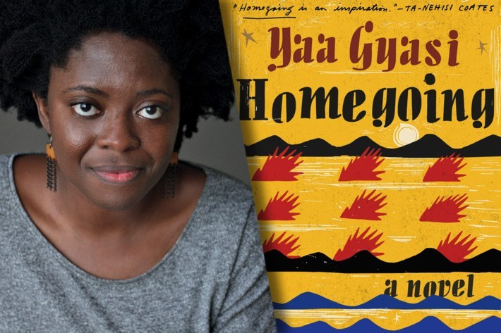
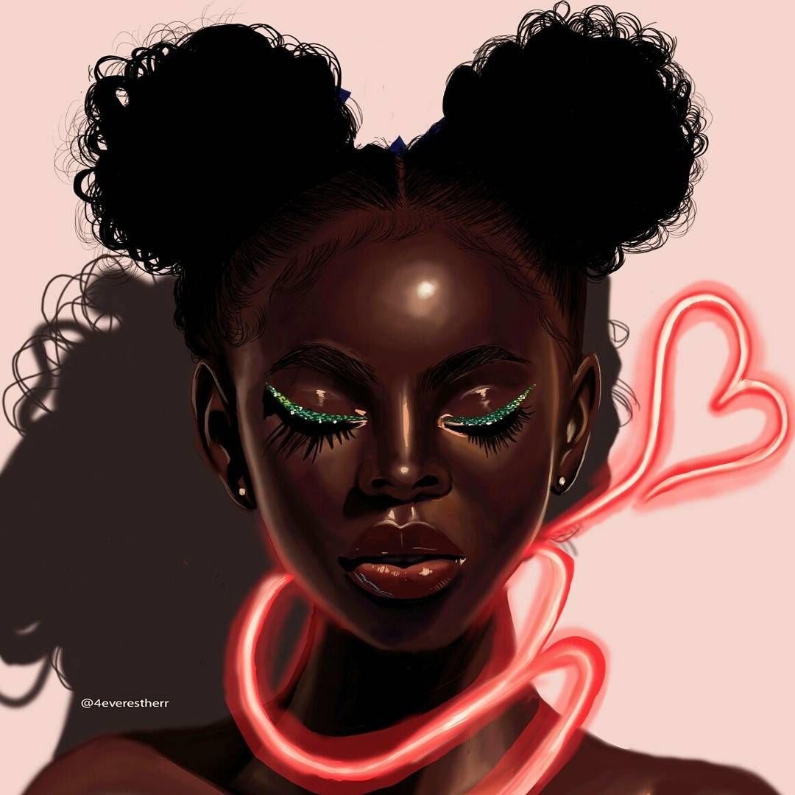
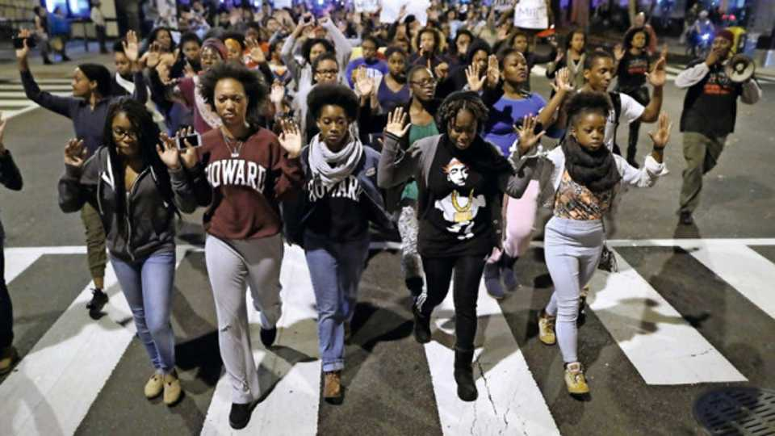

THE TREATMENT AND THE ROLE OF WOMEN OF WOMEN IN EFFIA AND ESI AND HOW DIFFERENT WOULD YOU SAY THE TREATMENT AND ROLE OF WOMEN IS TODAY.

Motherhood.The role of a woman was to bear children.Adwoa tells Efia that her coupling with James about bearing children or she would be taken back home if she didnt got pregnant.Today couples who are unable to get a child of their own opt to adopt.

A girl is not allowed to choose her husband instead the parents choose.This is clear from Cobbe’s family where Cobbe chooses Abeeku for Effia.Later Baaba chooses James for Effia though it was against her will.Today girls are allowed to choose the man they love.
Fertility in a woman was greatly valued. As Abeeku would not marry Effia when she had not started her menstruation.Thats why she agrees Effia to be married by the white man.
Motherhood.The role of a woman was to bear children.Adwoa tells Efia that her coupling with James about bearing children or she would be taken back home if she didnt got pregnant.Today couples who are unable to get a child of their own opt to adopt.
Women are seen as inferior and are assaulted for no reason.Big man beats up Little dove for no reason inorder to maintain his macho image not be mistaken for weakling.Today househelps are not mistreated as they have their rights.

Effia and Esi both deal with forms of social and physical traumas.Effia was beaten and abused by Baaba almost daily leaving her with not only physical scars but importantly emotional scars .Esi is also deprived off her dignity by being raped.